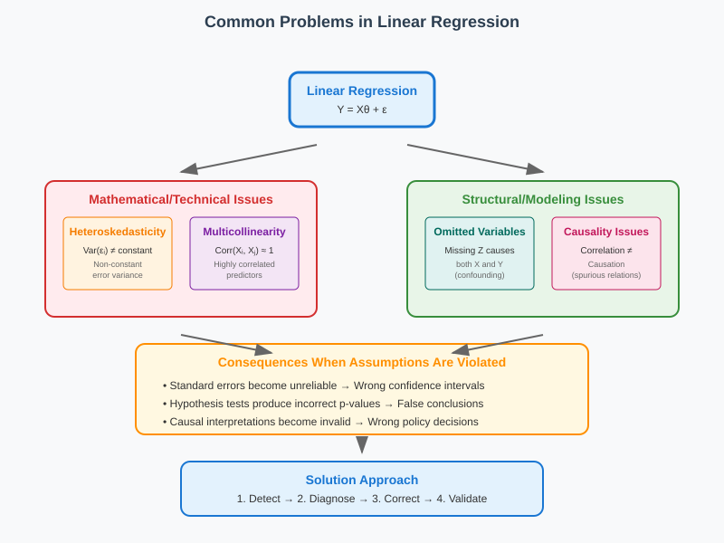
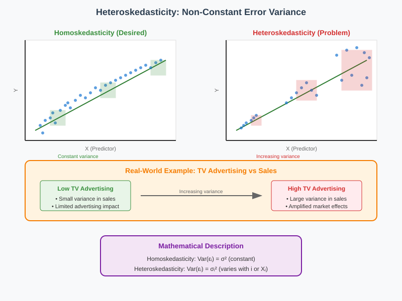
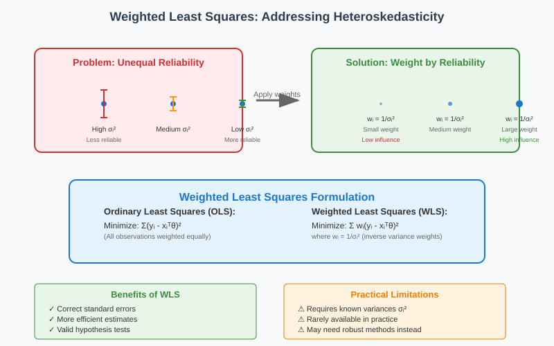
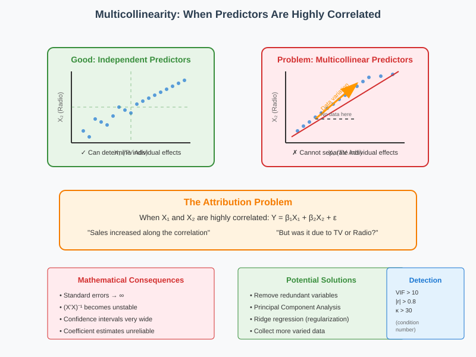
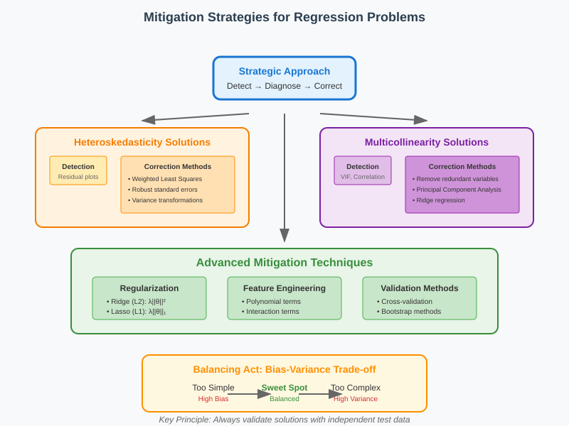

Heteroskedasticity and Multicollinearity in Linear Regression
📋 Quick Navigation
- 🔍 Overview: What Can Go Wrong
- 📊 Heteroskedasticity: Unequal Error Variance
- 🔗 Multicollinearity: Correlated Predictors
- 🔗 Multicollinearity: Real life Examples
- ⚠️ Causality vs Prediction: The Chocolate Paradox
- 🛠️ Mitigation Strategies
- 🎯 Performance Assessment Methods
- 📚 References & Further Reading
🔍 Overview: What Can Go Wrong
Linear regression relies on several mathematical assumptions that, when violated, can lead to unreliable results. Understanding these violations is crucial for building robust predictive models and avoiding misinterpretation of results.

Categories of Problems
Technical/Mathematical Issues: - Heteroskedasticity: Non-constant error variance - Multicollinearity: Highly correlated predictors
Structural/Modeling Issues: - Omitted variables: Missing confounding factors - Causality confusion: Correlation vs causal relationships
Impact on Analysis
When these assumptions are violated: - Standard errors become unreliable - Confidence intervals lose their intended coverage - Hypothesis tests produce incorrect p-values - Causal interpretations become invalid
The Roadmap Forward
- Detection: Identify when problems occur
- Mitigation: Apply appropriate corrections
- Regularization: Control model complexity
- Assessment: Evaluate performance with proper validation
📊 Heteroskedasticity: Unequal Error Variance
Heteroskedasticity occurs when the variance of residuals is not constant across all levels of the independent variables. This violates the homoskedasticity assumption of classical linear regression.

Definition and Detection
Homoskedasticity (desired): Var(εᵢ) = σ² for all i
Heteroskedasticity (problem): Var(εᵢ) = σᵢ² varies with i
Common Patterns: - Variance increases with predictor values (fan-shaped residuals) - Variance decreases with fitted values (funnel-shaped residuals) - Clustered variance patterns based on subgroups
Real-World Example: TV Advertising
In advertising effectiveness studies: - Low TV spending: Small variance in sales (limited advertising impact) - High TV spending: Large variance in sales (amplified market effects)
This creates a clear heteroskedastic pattern where variance increases with the predictor variable.
Consequences of Heteroskedasticity
| Issue | Impact | Severity |
|---|---|---|
| Biased Standard Errors | Incorrect confidence intervals | High |
| Invalid t-statistics | Wrong p-values for hypothesis tests | High |
| Inefficient Estimates | θ̂ still unbiased but not optimal | Medium |
| Prediction Intervals | Incorrect coverage probabilities | High |
Solutions and Remedies
1. Weighted Least Squares (WLS)
When variances are known:
Minimize: Σ wᵢ(yᵢ - xᵢᵀθ)²
where wᵢ = 1/σᵢ²
2. Robust Standard Errors
Use heteroskedasticity-robust standard errors (White's correction): - Huber-White sandwich estimator - HC0, HC1, HC2, HC3 variants
3. Transformation Methods
- Log transformation: For multiplicative heteroskedasticity
- Square root transformation: For count data
- Box-Cox transformation: General variance stabilization

🔗 Multicollinearity: Correlated Predictors
Multicollinearity occurs when predictor variables are highly correlated with each other, making it difficult to determine their individual effects on the response variable.

Understanding the Problem
When predictors are highly correlated: - Perfect collinearity: One variable is an exact linear combination of others - Near collinearity: Variables are highly (but not perfectly) correlated
Example: TV vs Radio Advertising
If X_TV ≈ k × X_Radio (highly correlated)
Then: Y = β₁X_TV + β₂X_Radio + ε
Cannot distinguish between TV and Radio effects
The Attribution Problem: - Sales increase along the correlated direction - Cannot determine if increase is due to TV or Radio - Both explanations fit the data equally well
Mathematical Consequences
1. Matrix Singularity Issues
θ̂ = (XᵀX)⁻¹XᵀY
When multicollinearity exists: - XᵀX becomes nearly singular - (XᵀX)⁻¹ becomes unstable - Standard errors become extremely large
2. Variance Inflation
Var(θ̂ⱼ) = σ²[(XᵀX)⁻¹]ⱼⱼ = σ²/(1-R²ⱼ) × 1/Σ(xᵢⱼ-x̄ⱼ)²
Where R²ⱼ is the R-squared from regressing Xⱼ on all other predictors.
Detection Methods
| Method | Threshold | Interpretation |
|---|---|---|
| Correlation Matrix | r | |
| Variance Inflation Factor (VIF) | VIF > 10 | Problematic collinearity |
| Condition Number | κ > 30 | Matrix near-singularity |
| Eigenvalue Analysis | λₘᵢₙ ≈ 0 | Linear dependence detected |
Variance Inflation Factor (VIF)
VIFⱼ = 1/(1-R²ⱼ)
Interpretation: - VIF = 1: No correlation with other predictors - VIF = 5: Variance inflated by factor of 5 - VIF > 10: Serious multicollinearity problem
Solutions for Multicollinearity
1. Variable Removal
- Remove redundant variables
- Keep the most interpretable or theoretically important
2. Principal Component Analysis (PCA)
- Transform to orthogonal components
- Use principal components as predictors
3. Ridge Regression
- Add penalty term: λΣβⱼ²
- Stabilizes coefficient estimates
4. Data Collection
- Gather data with more varied predictor combinations
- Design experiments to break correlations
🔗 Multicollinearity: Real life Examples
🔗 Quick Links
- Layman’s Explanation
- Technical Explanation
- Correlation Heatmap Example
- How to Detect Multicollinearity
- How to Fix Multicollinearity
Layman’s Explanation
Multicollinearity happens when two or more predictors give the same information.
👉 Example: Predicting house prices using: - Size of the house - Number of rooms - Number of bedrooms
But rooms and bedrooms overlap, so the model gets confused.
- The model can’t tell which variable is really important.
- Results (coefficients) jump around like a wobbly chair.
- Predictions may still work, but you can’t trust variable importance.
✨ Analogy: It’s like asking two friends who studied together the same question. They’ll give nearly identical answers. You don’t learn anything new from the second friend.
Technical Explanation
In multiple linear regression, multicollinearity = high correlation among independent variables.
Key Impacts:
- Unstable coefficients → small data changes cause large coefficient swings.
- Inflated standard errors → predictors may look insignificant.
- Interpretation issues → you can’t tell the unique effect of each variable.
Detection Tools:
- Correlation Matrix: If \(r > 0.8\), strong multicollinearity.
- Variance Inflation Factor (VIF):
[ VIF_i = \frac{1}{1 - R_i^2} ] - VIF = 1 → no issue
- VIF 1–5 → moderate
-
VIF > 10 → serious collinearity
-
Tolerance = 1/VIF (if < 0.1 → bad).
- Condition Index > 30 also flags issues.
Correlation Heatmap Example
We simulated house data with:
- Size (sq. ft.)
- Bedrooms
- Rooms
- Distance to city center
Resulting Correlation Matrix:

- Size, Bedrooms, Rooms → highly correlated (red, near 1).
- Distance → not correlated (blue/white).
👉 This is what multicollinearity looks like.
How to Detect Multicollinearity
- Check correlations between predictors.
- Compute VIF → if > 10, serious issue.
- Look at eigenvalues/condition index.
How to Fix Multicollinearity
- Drop one variable (keep either bedrooms or rooms).
- Combine variables (make an index).
- Regularization (Ridge/Lasso regression).
- Use PCA to create independent components.
- Collect more data (sometimes helps).
🔗 Quick Links
- Layman’s Explanation
- Technical Explanation
- Correlation Heatmap Example
- How to Detect Multicollinearity
- How to Fix Multicollinearity
Layman’s Explanation
Multicollinearity happens when two or more predictors give the same information.
👉 Example: Predicting house prices using: - Size of the house - Number of rooms - Number of bedrooms
But rooms and bedrooms overlap, so the model gets confused.
- The model can’t tell which variable is really important.
- Results (coefficients) jump around like a wobbly chair.
- Predictions may still work, but you can’t trust variable importance.
✨ Analogy: It’s like asking two friends who studied together the same question. They’ll give nearly identical answers. You don’t learn anything new from the second friend.
Technical Explanation
In multiple linear regression, multicollinearity = high correlation among independent variables.
Key Impacts:
- Unstable coefficients → small data changes cause large coefficient swings.
- Inflated standard errors → predictors may look insignificant.
- Interpretation issues → you can’t tell the unique effect of each variable.
Detection Tools:
- Correlation Matrix: If \(r > 0.8\), strong multicollinearity.
- Variance Inflation Factor (VIF):
[ VIF_i = \frac{1}{1 - R_i^2} ] - VIF = 1 → no issue
- VIF 1–5 → moderate
-
VIF > 10 → serious collinearity
-
Tolerance = 1/VIF (if < 0.1 → bad).
- Condition Index > 30 also flags issues.
Correlation Heatmap Example
We simulated house data with:
- Size (sq. ft.)
- Bedrooms
- Rooms
- Distance to city center
Resulting Correlation Matrix:
- Size, Bedrooms, Rooms → highly correlated (red, near 1).
- Distance → not correlated (blue/white).
👉 This is what multicollinearity looks like.
How to Detect Multicollinearity
- Check correlations between predictors.
- Compute VIF → if > 10, serious issue.
- Look at eigenvalues/condition index.
How to Fix Multicollinearity
- Drop one variable (keep either bedrooms or rooms).
- Combine variables (make an index).
- Regularization (Ridge/Lasso regression).
- Use PCA to create independent components.
- Collect more data (sometimes helps).
⚠️ Causality vs Prediction: The Chocolate Paradox
The famous chocolate consumption vs Nobel Prize study illustrates a critical distinction between predictive models and causal models.

The Chocolate-Nobel Prize Study
Observed Relationship: - X-axis: Chocolate consumption (kg/year/person) - Y-axis: Nobel Prizes per capita - Result: Strong positive correlation (r ≈ 0.79, p < 0.001)
Statistical Findings: - Statistically significant relationship - High R-squared value - Tiny p-value (highly unlikely by chance) - Clear linear trend in the data
Two Competing Explanations
Model 1: Direct Causal Effect
Chocolate → Intelligence → Nobel Prizes
Theory: Chocolate consumption improves cognitive function, leading to more Nobel Prizes.
Model 2: Confounding Variable
Wealth → Chocolate Consumption
Wealth → Research Investment → Nobel Prizes
Theory: Wealthy countries both consume more chocolate and invest more in research.
The Fundamental Problem
Both models are consistent with the observed data!
| Aspect | Model 1 (Direct) | Model 2 (Confounding) |
|---|---|---|
| Fits Data | ✅ Yes | ✅ Yes |
| Statistical Significance | ✅ Yes | ✅ Yes |
| Plausible Mechanism | ❓ Questionable | ✅ Yes |
| Policy Implications | Buy more chocolate | Invest in research |
Implications for Data Science
What the Data CAN Tell Us
- Predictive power: Given chocolate consumption, predict Nobel Prize rate
- Statistical association: Variables are related
- Model fit: Linear relationship describes the data well
What the Data CANNOT Tell Us
- Causal direction: Does A cause B or B cause A?
- Confounding factors: Are there hidden variables?
- Mechanism: How does the relationship work?
- Intervention effects: What happens if we change A?
Causal Inference Requirements
To establish causality, we need:
- Temporal precedence: Cause precedes effect
- Controlled experiments: Randomized interventions
- Mechanism identification: Understand the causal pathway
- Confounding control: Account for alternative explanations
Methods for Causal Inference: - Randomized controlled trials (RCTs) - Natural experiments - Instrumental variables - Regression discontinuity - Difference-in-differences
🛠️ Mitigation Strategies
General Approach to Regression Problems

1. Adding Variables
- Feature engineering: Create new variables from existing ones
- Polynomial terms: X², X³ for nonlinear relationships
- Interaction terms: X₁ × X₂ for combined effects
- Domain knowledge: Include theoretically important variables
2. Regularization Methods
Ridge Regression (L2):
Minimize: ||Y - Xθ||² + λ||θ||²
Lasso Regression (L1):
Minimize: ||Y - Xθ||² + λ||θ||₁
Elastic Net:
Minimize: ||Y - Xθ||² + λ₁||θ||₁ + λ₂||θ||²
3. Balancing Model Complexity
| Issue | Solution | Trade-off |
|---|---|---|
| Underfitting | Add variables/complexity | Risk overfitting |
| Overfitting | Regularization/simplification | Risk underfitting |
| Bias-Variance | Cross-validation for λ selection | Computational cost |
Variable Selection Strategies
Forward Selection
- Start with no variables
- Add variables that improve fit most
- Stop when improvement becomes minimal
Backward Elimination
- Start with all variables
- Remove variables that contribute least
- Stop when all remaining variables are significant
Best Subset Selection
- Evaluate all 2ᵖ possible models
- Choose based on AIC, BIC, or cross-validation
- Computationally intensive for large p
🎯 Performance Assessment Methods
Model Evaluation Framework
Proper assessment requires separating model training from evaluation to avoid overfitting.
1. Cross-Validation
k-Fold Cross-Validation: 1. Split data into k folds 2. Train on k-1 folds, test on remaining fold 3. Repeat k times 4. Average performance across folds
Benefits: - More robust than single train-test split - Uses all data for both training and testing - Provides variance estimates of performance
2. Bootstrap Methods
Bootstrap Procedure: 1. Sample n observations with replacement 2. Fit model on bootstrap sample 3. Evaluate on original data (or out-of-bag samples) 4. Repeat B times (typically B = 1000)
Applications: - Confidence intervals for predictions - Bias correction for performance estimates - Variable importance assessment
3. Performance Metrics
| Metric | Formula | Use Case |
|---|---|---|
| RMSE | √(Σ(y-ŷ)²/n) | General prediction accuracy |
| MAE | Σ | y-ŷ |
| R² | 1 - SS_res/SS_tot | Explained variance |
| Adjusted R² | 1 - (1-R²)(n-1)/(n-p-1) | Penalizes model complexity |
Validation Strategy Checklist
- [ ] Separate test set: Never used during model development
- [ ] Cross-validation: For hyperparameter tuning
- [ ] Multiple metrics: Don't rely on single measure
- [ ] Domain validation: Does the model make sense?
- [ ] Temporal validation: For time series data
- [ ] Robustness testing: Performance across subgroups
📚 References & Further Reading
📖 Core Textbooks
- Greene, W. H. (2018). Econometric Analysis (8th ed.). Pearson.
-
Comprehensive treatment of heteroskedasticity and multicollinearity
-
James, G., Witten, D., Hastie, T., & Tibshirani, R. (2021). An Introduction to Statistical Learning (2nd ed.). Springer.
-
Excellent coverage of regularization and cross-validation methods
-
Wooldridge, J. M. (2019). Introductory Econometrics: A Modern Approach (7th ed.). Cengage Learning.
- Practical approach to regression diagnostics and robust inference
🔬 Research Papers
- White, H. (1980). A heteroskedasticity-consistent covariance matrix estimator and a direct test for heteroskedasticity. Econometrica, 48(4), 817-838.
-
Seminal paper on robust standard errors
-
Tibshirani, R. (1996). Regression shrinkage and selection via the lasso. Journal of the Royal Statistical Society, 58(1), 267-288.
- Introduction of Lasso regression for variable selection
🌐 Applied Examples
- Messerli, F. H. (2012). Chocolate consumption, cognitive function, and Nobel laureates. New England Journal of Medicine, 367(16), 1562-1564.
-
The famous chocolate-Nobel Prize correlation study
-
Practical examples of multicollinearity detection
- Comprehensive regression diagnostic tools
Notebook Topics: - Heteroskedasticity detection and correction - Multicollinearity diagnosis with VIF - Ridge and Lasso regularization - Cross-validation for model selection - Bootstrap confidence intervals
📊 Datasets for Practice
- Boston Housing: Classic dataset with heteroskedasticity
- Auto MPG: Multicollinearity between engine features
- Wine Quality: Regularization and feature selection
- Country Statistics: Causality vs correlation examples